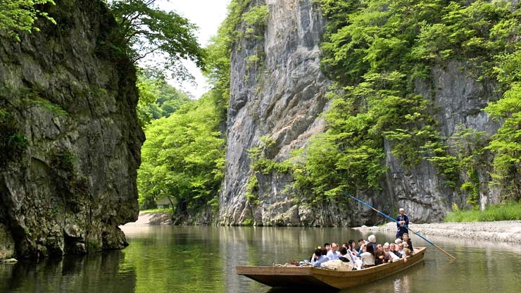
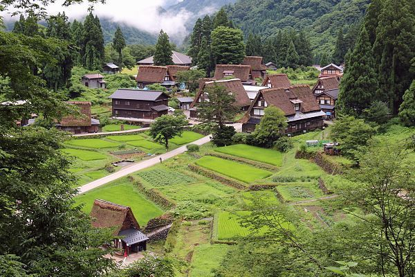

Prefectures
The country of Japan can be split into regions and can further break down into prefectures. Each prefecture is unique in its own way there is just too many things you can do in any one of them
Aichi
Akita
Aomori
Chiba
Ehime
Fukui

Fukuoka
Fukushima
Gifu
Gunma
Hiroshima
Hokkaido
Hyogo
Ibaraki
Ishikawa

Iwate
Kagawa
Kagoshima
Kanagawa
Kōchi
Kumamoto
Kyoto
Mie
Miyagi
Miyazaki
Nagano
Nagasaki
Nara
Niigata
Ōita
Okayama
Okinawa
Osaka
Saga
Saitama
Shiga
Shimane
Shizuoka
Tochigi
Tokushima

Tokyo
Tottori

Toyama
Wakayama
Yamagata
Yamaguchi
Yamanashi